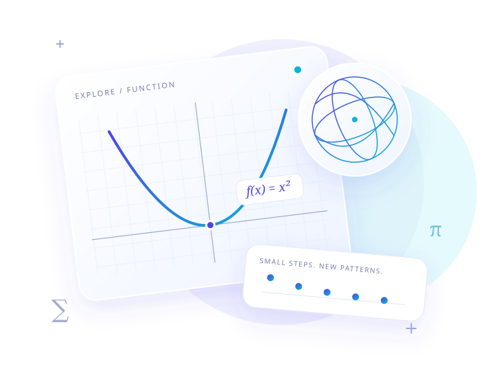

PICK UP WHERE YOU LEFT OFF
接著你的好奇心。
選一個主題，開始你的第一個實驗。
EXPLORE. PRACTICE. CREATE.
從一個問題到一張圖形，把抽象的想法變成可以親手探索的世界。

PICK UP WHERE YOU LEFT OFF
選一個主題，開始你的第一個實驗。
YOUR LEARNING JOURNEY
已探索 0 / 520 個實驗
FIND YOUR NEXT IDEA
調整參數、觀察變化，再用自己的話說明原因。
A WORKSPACE FOR EVERY IDEA
YOUR MATHEMATICAL WORKSPACE
選一個主題，調整參數，讓圖像帶你發現規律。
用下方滑桿或方向鍵微調參數；數值與公式會同步更新。
01 / 操作
02 / 思考
先預測結果，再按「揭示公式」驗證你的推理。
03 / 記錄
留下一個觀察、一個理由，或下次想驗證的問題。
不需要登入。收藏、探索進度與筆記保存在此裝置；清除瀏覽器資料會移除紀錄，建議定期匯出備份。分享網址只包含模組與參數。